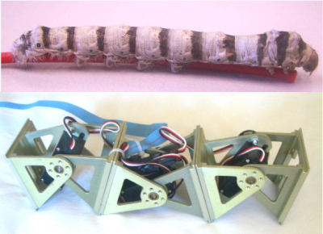

Los días del 14 al 17 de Abril se celebró el congreso IEEE International Conference on Mechatronics (ICM09) organizado por la Universidad de Málaga. Yo asistí para presentar el artículo: A New Application of Modular Robots on Analysis of Caterpillar-like Locomotion realizado en colaboración con el grupo TAMS de la Universidad de Hamburgo.Me resulta extraño asistir a los congresos de robótica y no llevar robots, así que a última hora decidí llevarme el prototipo de robot Cube-M y programarlo para que se moviese de manera autónoma usando los micro-osciladores. También hice un vídeo para mostarlo en la presentación, junto con la demostración en vivo, claro 😉

Al terminar mi presentación, tuve que exponer también el artículo A Novel Passive Adhesion Principle and Application for an Inspired Climbing Caterpillar Robot. No soy autor de este trabajo, pero Houxiang me pidió que lo expuera por él, ya que así sólo tendría que asistir una sola persona al congreso.